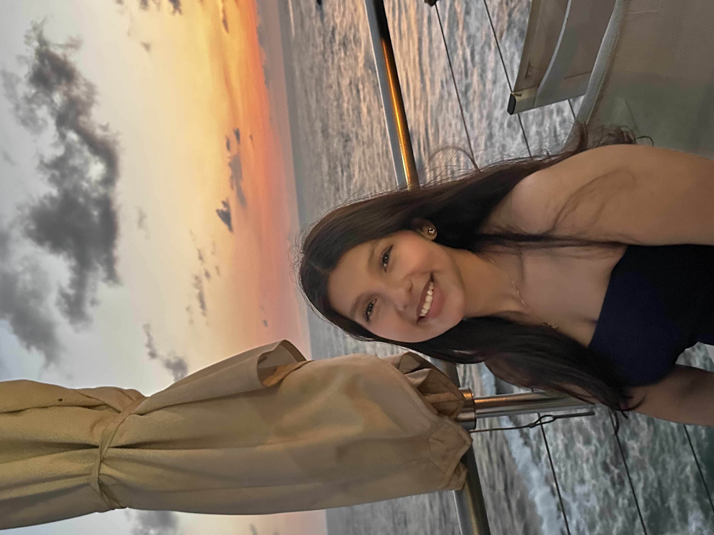
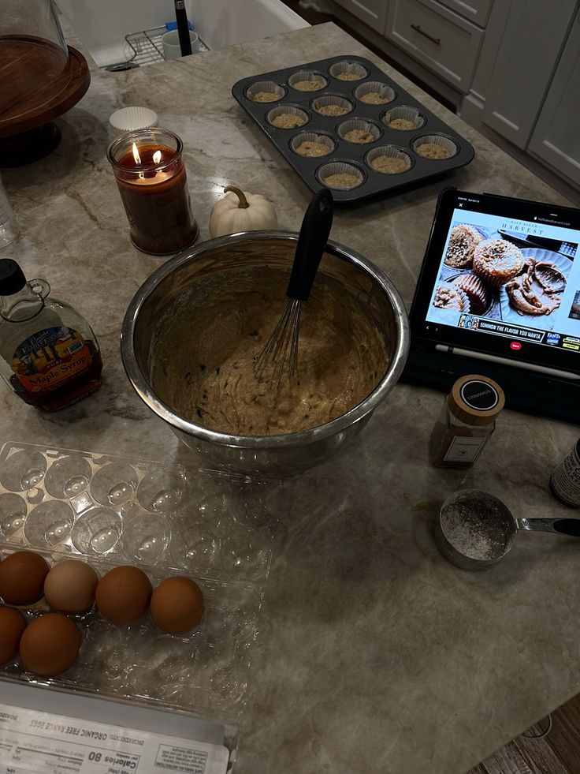
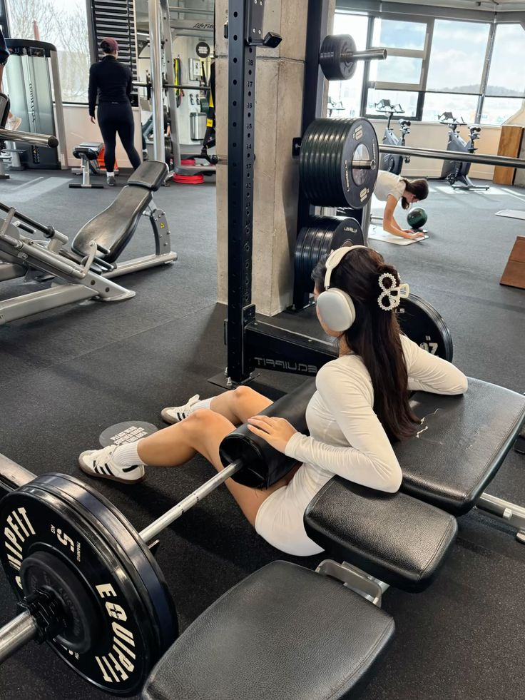
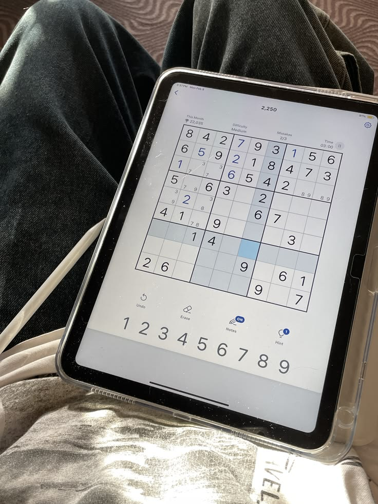
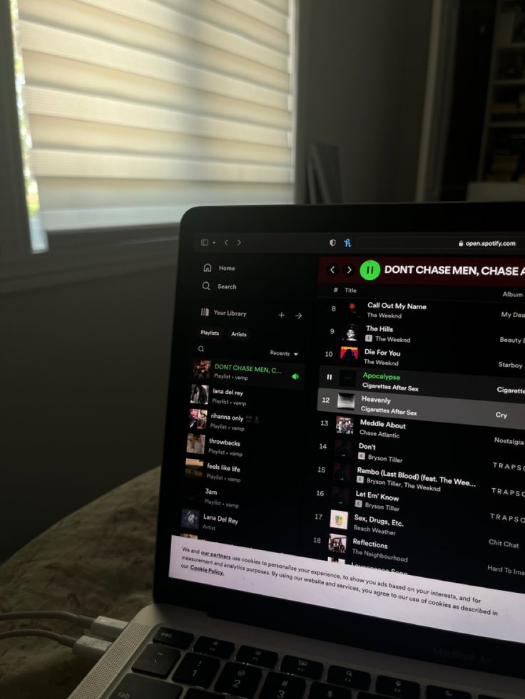

Sobre mi

Me llamo Andrea Sofía Torres Hernández, tengo 20 años y soy hija única. Actualmente me encuentro estudiando mi segundo año en la carrera de Ingeniería de Software y Negocios Digitales dentro de la ESEN. Estudie en el Colegio García Flamenco desde kinder 4 hasta graduarme de Bachillerato.
Considero que soy una persona realista, introvertida, observadora, disciplinada y responsable en aspectos generales de mi vida. El ser hija única ha hecho que me cueste encontrar amigos, pero poco a poco he logrado encontrar personas que llenan mi vida. Estar sola por gran parte de mi vida hizo que siempre me llamara la atención el experimentar y conocer cosas nuevas.
En un futuro espero finalmente obtener mi título y ejercer, para poder independizarme y encontrar realmente mi propósito de mi vida, encontrar estabilidad, viajar, conocer nuevas personar y en un futuro formar mi familia.
Intereses/Gustos
- Película Favorita
- Coraline y La Puerta Secreta
- Serie Favorita
- Alice in Borderland
- Saga de Libros Favorita
- Los Juegos del Hambre
- Libro Favorito
- Milk and Honey
- Banda Favorita
- The Neighbourhood
- Comida Favorita
- Sushi
- Casa de Hogwards
- Ravenclaw
Hobbies

Hornear

Ir al gimnasio

Resolver Sudokus

Escuchar música